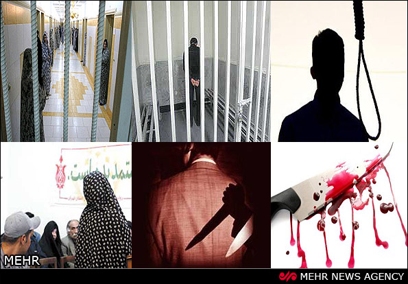

پذيرش > اخبار > همسرکشی؛ مهمترین قتل خانوادگی سال 90


 همسرکشی؛ مهمترین قتل خانوادگی سال 90 همسرکشی؛ مهمترین قتل خانوادگی سال 90
31 تیر 1391 - - نسخه قابل چاپ
مهر: همسرکشی بیشترین سهم را در قتلهای خانوادگی به خود اختصاص داده است. طی سالهای اخیر با افزایش مصرف مواد مخدر صنعتی و اختلالات روحی و روانی شاهد افزایش آمار همسرکشی به خصوص در شهرهای بزرگ هستیم که زنگ خطر را در این زمینه به صدا درآورده است.
به گزارش خبرنگار مهر، بررسی قتل های سال 90 نشان می دهد 33 درصد قتل ها با انگیزه اختلافات خانوادگی رخ می دهد و قاتل و مقتول با هم نسبت فامیلی دارند. حال از میان قتل های خانوادگی بیشترین آمار مربوط به همسرکشی به خصوص قتل زنان به دست مردان است. امروز با نگاهی به صفحه حوادث روزنامه ها و نشریات به روشنی درمی یابیم که وقوع قتل های خانوادگی بویژه همسرکشی زنگ خطرهای جدی را به صدا درآورده است.
متأسفانه طی چند هفته اخیر شاهد چند پرونده همسرکشی در شهرهای مختلف کشور بودیم که چندین زن و مرد به شکلهای مختلف قربانی جنایتهای هولناک شدند که بررسی علل و عوامل بروز چنین قتلهایی برای پیشگیری و کاهش جرایم مشابه بسیار حائز اهمیت است.
همسرکشی از جمله جرایم بسیار قدیمی تاریخ بشر است که در طول دوران های مختلف به دلایل متعدد با تغییرات فراوانی روبه رو بوده است. به طور معمول زنانی مرتکب قتل همسرانشان می شوند که با او احساس خوشبختی نمی کنند. زنان وقتی خود را با خشونت روبه رو می بینند، پس از مدتی درمی یابند که نمی توانند رویه و رفتار همسرشان را تغییر دهند. بنابراین بتدریج او را یک شکنجه گر و ظالم تلقی کرده و آرزوی مرگش را می کنند. مردان نیز اغلب بر اثر عصبانیت های آنی یا شک دست به قتل همسران خود می زنند.
عوامل موثر در همسرکشی
دکتر محمد علی نجفی توانا – جرم شناس – در این باره می گوید : زندگی در شهر های بزرگ، آپارتمان های کوچک، کمبود فضای طبیعی، اعتیاد، اختلالات روانی و گرمای هوا از جمله عوامل موثر در پدیده همسرکشی است. بررسی پرونده های همسرکشی نشان می دهد قتل های اتفاقی که بر اثر عصبانیت صورت می گیرد بیشتر در نیمه اول سال رخ می دهد. قتل های از پیش طراحی شده نیز در نیمه دوم سال رخ می دهد که بر اساس یک پژوهش علمی این موضوع با آب و هوا مرتبط است. در فصل گرما آستانه تحمل افراد کاهش پیدا می کند و در برابر هرکنشی از خود واکنش نشان می دهد. همچنین در خانه هایی که فضای طبیعی در آن زیاد است شاهد درگیری کمتری میان زوج ها هستیم.
وی افزود: اختلالات روانی و اعتیاد نیز از عوامل موثر در همسرکشی است . متاسفانه طی سال های اخیر مصرف ماده مخدر شیشه باعث افزایش قتل همسران به دست این معتادان شده است. شیشه باعث ایجاد توهم سو ظن در فرد معتاد می شود به طوری که این فاتلان پس از دستگیری شک به همسران خود را انگیزه قتل اعلام می کنند اما پس از بررسی ها مشخص می شود او به دلیل توهم و افکار پوچ تصور اشتباه کرده است.
این استاد دانشگاه با اشاره به انگیزه زنان برای قتل همسرانشان گفت: زنانی مرتکب قتل همسرانشان می شوند که در کنار او احساس خوشبختی و رضایت نمی کنند. حال در صورت ادامه این نارضایتی به فکر پایان دادن به آن افتاده و سعی در رهایی خود از این زندگی می کنند. در این میان برخی زنان برای طلاق با مشکل روبرو هستند. این افراد گاهی در مسیر زندگی با مرد دیگری روبرو می شوند که محبت از دست رفته خود در زندگی مشترک را، در او می بینند. این زمان قتل همسر تنها گزینه پیش روی آنها است که با ترغیب و تشویق شخص سوم او را مجبور به این کار می کند
نقش اختلالات هذیانی در قتل همسران
یکی از علل شایع در بروز این پدیده وجود اختلالات هذیانی است. یک سلسله باورهای نادرست که با منطق قابل اصلاح نمی باشند. اختلالات هذیانی انواع مختلفی دارند اما یکی از انواع بسیار رایج آن که به وفور در کلینیک های روانپزشکی با آن روبه رو می شویم اختلال هذیانی از نوع حسادت است. در این نوع اختلال مرد یا زن همواره به همسر خود مشکوک است و گمان می کند که او در حال خیانت است.
به این منظور دائم همسرش را تحت کنترل داشته و تمام رفتار و حرکات و امور شخصی او از قبیل تلفن ها، محل کار، رایانه، پیام های کوتاه تلفنی و غیره را به دقت و با وسواس بررسی می کند .حال کافی است که فرد در باور هذیانی خود بپندارد که همسرش به وی خیانت کرده است. بنابراین درصدد انتقام برخواهد آمد که این امر می تواند به همسرکشی نیز منتهی گردد. اختلال هذیانی حسد، یک اختلال روانی قابل درمان است که در صورت درمان به موقع، می توان از بروز اتفاقات ناگوار بعدی پیشگیری کرد.
تفاوت زنان ومردان در قتل
در بررسی قتل زنان به دست مردان و برعکس تفاوت هایی وجود دارد. مردان بیشتر خود مرتکب قتل می شوند و از روش های خشن استفاده می کنند. اما زنان در اغلب موارد با کمک شخص سوم جنایت را رقم می زنند.زنان کمتر از روش های خشن استفاده می کنند البته طی چند سال اخیر قتل با چاقو در بین زنان رواج پیدا کرده است.
دکتر مجید ابهری – آسیب شناس – در این باره معتقد است : بر اساس آمار ها مردان بدون نقشه قبلی و به صورت آنی مرتکب قتل همسران خود می شوند اما زنان در 95 درصد قتل ها با نقشه قبلی و کمک شخص سوم شوهران خود را از پا در می آوردند. زن در این میان نقشه اغفالگر را داشته و با دادن وعده هایی مانند ازدواج ، پول و.... مرد دیگری را فریب داده و او را برای قتل همسرش ترغیب می کند.
وی افزود: خشونت در پرونده های همسرکشی افزایش یافته است به طوری که پیش از این زنان برای قتل شوهران خود از روش هایی مانند قتل در خواب، سم و .... استفاده می کردند که طی سال های اخیر شاهد قتل با ضربه های کارد، مثله کردن و یا سوزاندن جسد مقتول هستیم. مردان اغلب بر اثر عصبانیت مرتکب قتل می شوند و پس از دستگیری از کار خود ابراز پشیمانی می کنند. از سوی دیگر 80 درصد مردان همسرکش معتاد به مواد مخدر صنعتی بوده که بر اثر سوظن ناشی از توهم مصرف مواد مخدر دست به جنایت می زنند.
وی به نقش شبکه های ماهواره ای در افزایش همسرکشی در کشور اشاره کرد و گفت: متاسفانه سریال های این شبکه رواج دهنده عشق های مثلثی در کشور است که پایان این عشق های غربی جنایت خواهد بود
بیشترین همسرکشی ها کجا رخ می دهد؟
بررسی یک تحقیق نشان میدهد، بالاترین میزان همسرکشی در شهرهای تهران، کرج، مشهد و آذربایجان شرقی بوده است. از سوی دیگر کمترین آمار مربوط به استانهای لرستان، سیستان و بلوچستان و هرمزگان است. البته در این استانها چند همسری رایج بوده و این در کاهش آمار وقوع همسرکشی نقش مهمی دارد. اغلب زنان همسرکش خانهدار بوده و 47 درصد مردان جنایتکار بیکار بودند. توهم و سوءظن مهمترین انگیزه قتل زنان به دست همسرانشان است. 20 درصد زنان در خواب کشته شدهاند و بیشتر اجساد در اتاق خواب و حمام کشف شده است.
کارشناسان اعتقاد دارند که اغلب همسرکشی ها ریشه در مشکلات روحی و روانی یکی از زوجین دارد. به طوری که توجه نکردن زن و مرد به این مشکل رفتاری در آینده اتفاقات تلخی را رقم می زند. متاسفانه فرهنگ استفاده از مشاوره در جامعه پائین است و برخی شهروندان تصورمی کنند تنها افرادی که بیماری روانی دارند باید به روانپزشک مراجعه کنند.
گاهی زوج ها در زندگی به بن بست می رسند که جدایی آنها بهترین راه است زیرا ادامه زندگی مشترک از سوی آنها باعث قتل خواهد شد. در این میان مصرف مواد روانگردان نیز در افزایش پرونده های همسرکشی نقش مهمی دارد. این مواد باعث ایجاد توهم و جسارت قتل در فرد استفاده کننده می شود.
قتل های خانوادگی به خصوص همسرکشی با اقدامات پلیسی قابل پیشگیری نیست ودر این زمینه باید اقدامات فرهنگی صورت گیرد. باید قبل از ازدواج زوج ها آموزش های لازم در این زمینه به دختران وپسران داده شود و آنها با مشکلاتی که در پیش راه دارند آشنا شوند.
ارسال به
بالاترین
،
توییتر
،
فریندفید
،
فیسبوک
در همين بخش :
 پروین ذبیحی برنده جایزه حقوق بشری سازمان غيردولتى اتريشى سودويند شد پروین ذبیحی برنده جایزه حقوق بشری سازمان غيردولتى اتريشى سودويند شد
پخش کارت پستال و بروشور در روز جهانی زن در تهران
تمدید زمان برای امضای بیانیهی جمعی از فعالان زن به مناسبت هشت مارس
مجوزی که در نطفه خفه شد
بیش از 2000 امضا در اعتراض به تبعیض های آموزشی به مجلس تحویل داده شد
ديگر بخش ها :
طرح یک میلیون امضا
|
مقالات
|
سایت نوشته ها
|
اخبار
|
گزارش كمپين
|
گفت و گو
|
علیه سکوت
|
كوچه به كوچه
|
نامه های شما
|
گزارش ویژه
|
گفتگو با اعضا
|
ویژه سالگرد کمپین
|
تصویر برابری
|
دل آرام علی
|
تریبون
|
مقالات
|
تاریخ شفاهی
|
خارج از چارچوب
|
کتابخانه
|
درباره کمپین
|
کمپین در شهرها
|
کمپین در بند
|
صدای تغییر
|
ویژه 22 خرداد
|
لایحه حمایت از خانواده
|
گالری
|
عشا مومنی
|
امیر یعقوبعلی
|
خدیجه مقدم
|
راحله عسگری زاده و نسیم خسروی
|
پروین اردلان،جلوه جواهری، مریم حسین خواه، ناهید کشاورز
|
زینب پیغمبرزاده
|
سعیده امین، سارا ایمانیان، محبوبه حسین زاده، ناهید کشاورز و همایون نامی
|
احترام شادفر
|
نسیم سرابندی زاده،فاطمه دهدشتی
|
وبلاگ مهمان
|
پرونده خرم آباد
|
دستگیری ها
|
مریم مالک
|
پرستو اللهیاری
|
مهرنوش اعتمادی
|
سمیه رشیدی
|
Other Languages
|
همراهان
|
«فراخوان کمپین ده روز با بهاره هدایت»
| English
|